خانه › آشنایی با ما
شرکت دانشبنیان مخازن طبی آبادیسآشنایی با آبادیس
شرکت دانشبنیان مخازن طبی آبادیس با نگاهی نوآورانه در صنعت تجهیزات پزشکی فعالیت میکند و بهعنوان پیشگام در کنترل عفونتهای بیمارستانی، گامهای موثری در ارتقای بهداشت و ایمنی مراکز درمانی برداشته است.
درباره ما بیشتر بدانید...
ماموریت ما: ماموریت شرکت دانشبنیان مخازن طبی آبادیس ارائه راهکارها و محصولات تخصصی در مدیریت زبالههای بیمارستانی و جلوگیری از انتشار عفونتها است. ما با تمرکز بر فناوریهای پیشرفته و مدیریت هوشمند ضایعات بیمارستانی، برای حفاظت از سلامت بیماران و محیط زیست تلاش میکنیم.
چشمانداز ما: چشمانداز آبادیس، حذف و کنترل کامل عفونتهای بیمارستانی مرتبط با جمعآوری ضایعات، تحقیق و توسعه محصولات نوین، و ایجاد راهکارهای پایدار در راستای بهبود سلامت عمومی و محیط زیست است.
دستاوردها و توانمندیها: شرکت مخازن طبی آبادیس بهعنوان بزرگترین تولیدکننده کیسه ساکشن یکبارمصرف در ایران، بیش از ۵۰۰ مرکز درمانی را در ۲۸ استان تجهیز کرده است. ما با تکیه بر زیرساختهای پیشرفته نرمافزاری و سختافزاری و تیم متخصص خود، آماده صادرات به کشورهای خاورمیانه، آسیای مرکزی، حوزه قفقاز، شمال آفریقا و آمریکای مرکزی هستیم.
تاریخچه و پیشینه مجموعه دانش بنیان آبادیس
کیسههای یکبارمصرف ساکشن از سال ۱۹۹۰ در کشورهای توسعهیافته مورد استفاده قرار گرفتند. در ایران، از سال ۲۰۱۰ میلادی فرهنگسازی استفاده از این محصول توسط مدیران و بنیانگذاران شرکت ابزار درمان پرشیا آغاز شد. پس از سالها تلاش و پویایی، در سال ۲۰۱۷ شرکت دانشبنیان مخازن طبی آبادیس تاسیس شد تا تولید کیسههای ساکشن یکبارمصرف را آغاز کند و گامهای موثرتری در زمینه کنترل عفونتهای بیمارستانی بردارد.
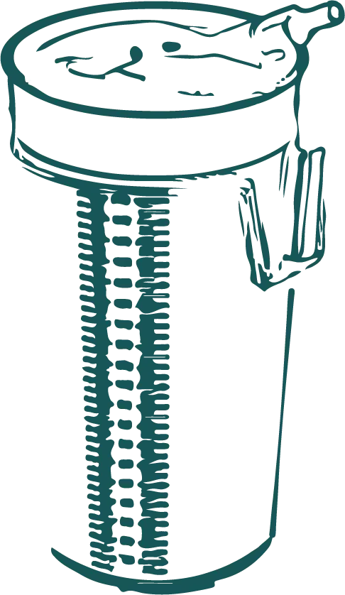
تعهد ما
ما در آبادیس به اثرگذاری واقعی باور داریم. این اثرگذاری شامل:
- کنترل عفونتهای بیمارستانی
- حفظ محیط زیست و توسعه پایدار
- مدیریت جمعآوری زبالههای مایع بیمارستانی
- حمایت از پزشکان، پرستاران، متخصصین تجهیزات پزشکی و تمامی دستاندرکاران مراکز درمانی
اهداف ما
با نگاه علمی، کیفیت بالا و نوآوری در محصولات، شرکت مخازن طبی آبادیس همواره در مسیر بهبود سلامت جامعه و حفاظت از محیط زیست گام برمیدارد.
- مدیریت بهینه زبالههای عفونی و مایع بیمارستانی
- کاهش و کنترل عفونتهای ناشی از زبالهها و سیالات بیمارستانی
- فرهنگسازی برای استفاده حداکثری از راهکارها و محصولات ما در مراکز درمانی و بیمارستانها
چرا آبادیس؟
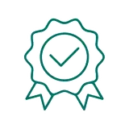
گارانتی و وارانتی محصولات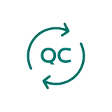
تضمین کیفیت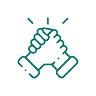
ارتباط مستمر تیم فروش و فنی با مراکز درمانی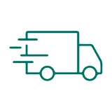
ارسال رایگان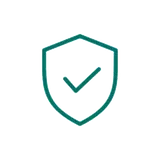
قابل اعتماد و اطمینان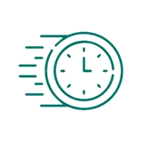
ارسال سریع محصول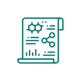
نگاه علمی و تخصصی به موضوع کنترل عفونت و محیط زیست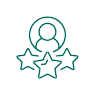
خدمات پس از فروش مناسب و با کیفیت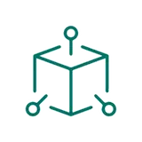
استفاده از فناوری های نوین در حوزه مدیریت و ساختار سازمانی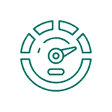
بالاترین ظرفیت تولیدی کیسه ساکشن یکبار مصرف در خاورمیانه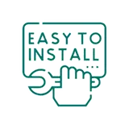
راحتی و سهولت در استفاده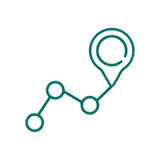
تضمین اصالت کالا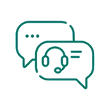
پشتیبانی فروش از لحظه ارتباط و ثبت سفارش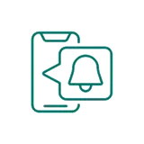
اطلاع رسانی به موقع از وقایع و کمپین ها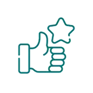
رضایت مشتریانگواهینامه ISO
شرکای تجاری
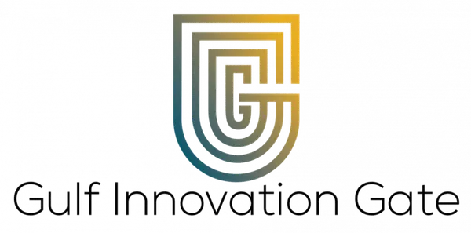
هدف ما ایجاد راه حل های موثر در حوزه سلامت و محیط زیست و اثرگذاری بر آینده ای بهتر است. خدمات بازرگانی، صادرات و واردات محصولات مختلف به ویژه محصولات پزشکی و دارویی، صنایع غذایی و فناوری اطلاعات از جمله خدمات این شرکت است.
وب سایت مجموعه ↗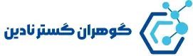
مجموعهای متشکل از مهندسین متخصص در حوزه فیلتر است که با بهره گیری از دانش به روز و فناوری های نوین همواره به دنبال ارائه موثرترین راه حل، کسب کارآمدترین نتایج و ایجاد بهترین تجربه برای مشتریان خود است چرا که آنان، با ارزش ترین ثروت و بالاترین اولویت ما هستند.
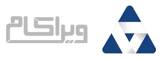
یک تیم متشکل از جوانان مستعد، باانگیزه و متخصص در حوزه علوم داده، تحلیل، برنامه نویسی، تحقیق و توسعه نرم افزاری و علوم بصری جهت ارائه سرویس، همراه با رعایت کامل جزئیات، در کنار سایر موارد کلی، کنار یکدیگر پیوسته در حال پیشرفت و توسعه مستمر می باشند.
وب سایت مجموعه ↗آشنایی با تیم اجرایی
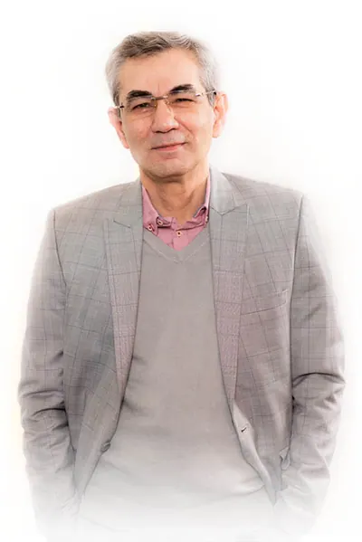
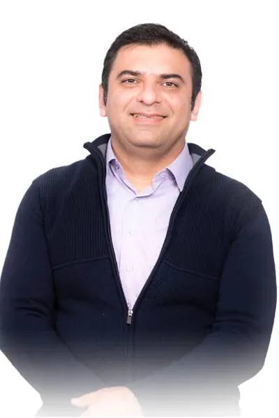
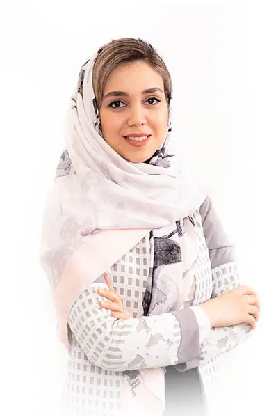
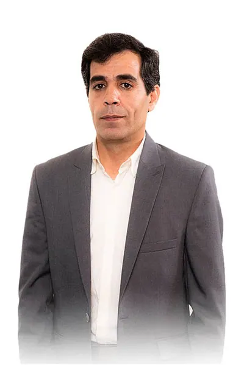
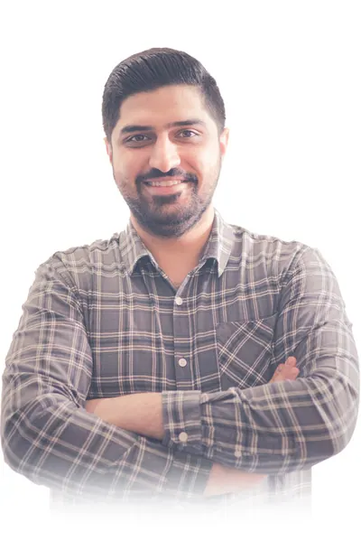
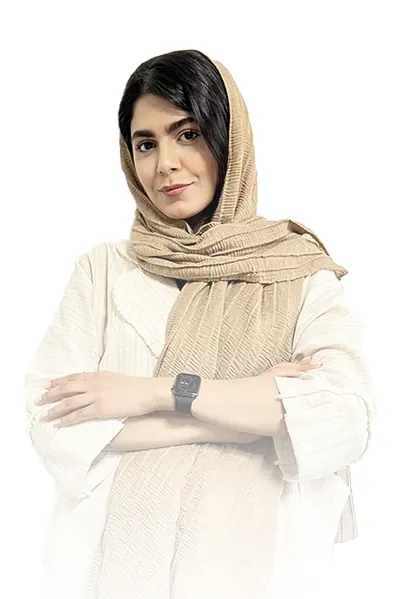
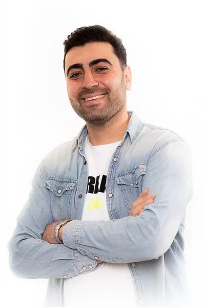
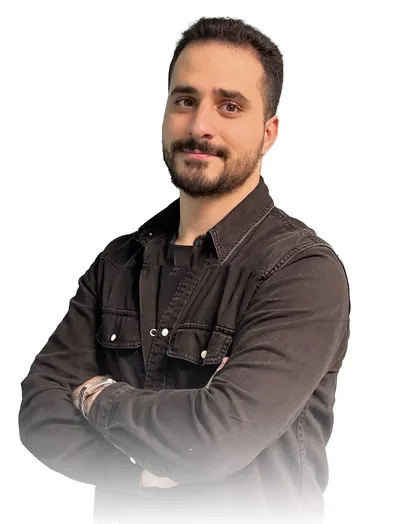
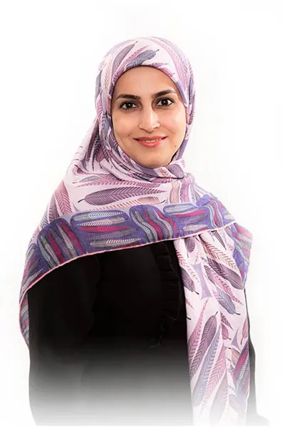